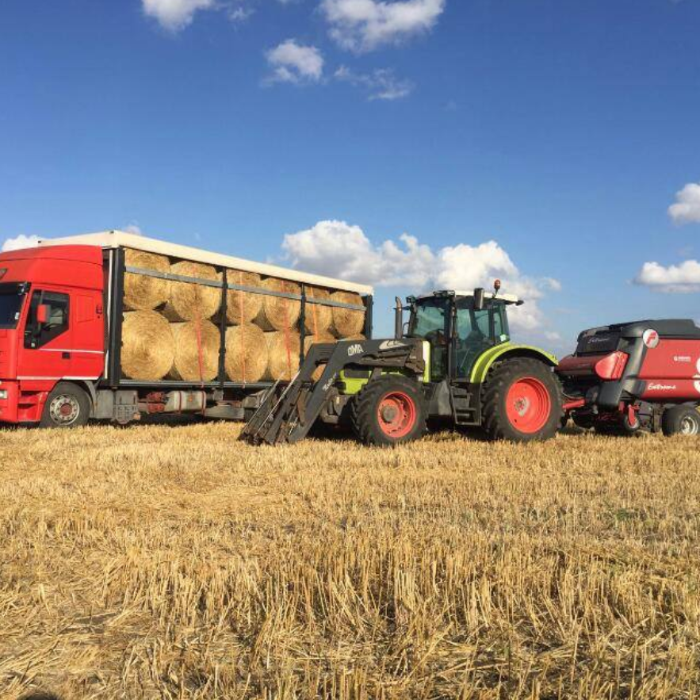

La Nostra Storia, dal 1977
il fondatore si chiamava leonardo riccio ora defunto. l'azienda attualmente e' mantenuta dal figlio michele riccio.
-
1977
La famiglia Riccio inizia la sua avventura agricola con i primi campi di fieno.
-
2005
Introduzione di nuove tecniche agricole sostenibili per migliorare la qualità del fieno.
-
Oggi
L'azienda diventa un punto di riferimento per fieno di alta qualità in tutta la regione.